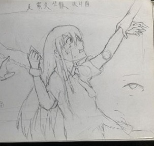

吳文軒 Vincent Wu
新竹縣竹北市溪洲路358巷85弄31號· (03) 5542-049 ·
vincent776134@gmail.com
我是吳文軒，就讀世新大學資傳一甲，現在在班上沒什麼存在感哈哈。興趣是畫畫與唱歌，而且我也非常熱愛看動漫，對這些有興趣的都可以找我討論、聊這些事物喔~
作品集

|
||
| 眼睛繪圖練習 | 人物繪圖練習 | 手繪"禰豆子" |
|  | ||
| 手繪"初音未來" | 反霸凌壁報設計 | 手繪人物 |
| 手繪動物擬人 | 仿畫角色"托托" | 手繪"初音未來" |
Education
University of Colorado Boulder
Bachelor of Science
Computer Science - Web Development Track
GPA: 3.23
August 2006 - May 2010
James Buchanan High School
Technology Magnet Program
GPA: 3.56
August 2002 - May 2006
專業能力
adobe系列產品 office系列產品


專業技能
- 電腦繪圖能力
- 文書處理能力
- 演奏樂器能力
- 影片編輯能力
興趣
我非常喜歡聽音樂，也非常喜歡唱歌，我聽的音樂都以日文歌居多，是因為國中的時候同學推薦我聽的，也就一路聽到現在。而唱歌是高中時候參加合唱團的時候開始越來越喜歡唱歌，現在還在持續的練習中。
我閒閒沒事的時候都會畫畫，高中上課無聊的時候我就會在課本上畫畫，所以本子上幾乎都是我的塗鴉。而我畫畫的風格是日本漫畫類型。而現在有慢慢的在學電腦繪圖。
喜歡的歌曲
| 歌名 | 歌手 |
|---|---|
| 修練愛情 | 林俊傑 |
| 沒離開過 | 林志炫 |
| I want somthing just like this | The Chainsmoker |
| Symphony | Clean Bandit |
| 心做し | 蝶々P/一之瀬ユウ |
| Lemon | 米津玄師 |